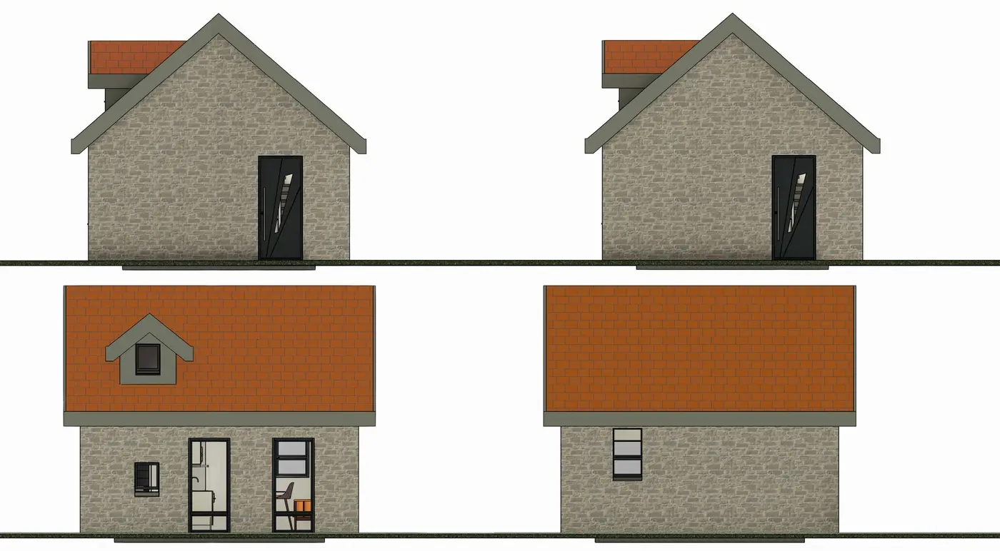
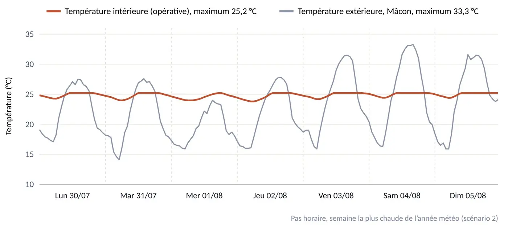

Rénovation d'une petite maison en pierre vers la classe B
Transformer un ancien abri en pierre en un logement de 20 m², confortable été comme hiver, et viser la classe énergétique B.
Un abri en pierre à rendre habitable
Sur un terrain du Jura, à plus de 500 m d'altitude, des particuliers possèdent une maison et une petite dépendance en pierre : murs de 50 cm, sol en terre-plein, ni isolation ni chauffage. Ils veulent la transformer en un logement de 20 m² avec séjour en double hauteur, salle d'eau et mezzanine, destiné à la location saisonnière.
Leur objectif : la classe énergétique B, pour le confort des occupants et la valeur du bien. Ils réalisent eux-mêmes les travaux et voulaient un projet clair, chiffré, avec des équipements adaptés à une si petite surface.

Deux calculs complémentaires
BETTHER a dessiné les plans à partir des relevés et des souhaits des propriétaires, puis mené l'étude avec le logiciel Pléiades :
- une simulation thermique dynamique, heure par heure sur une année météo, pour dimensionner les équipements et vérifier le confort d'été ;
- un calcul selon la méthode du DPE (3CL), pour estimer la classe énergétique de chaque scénario. Il ne vaut pas DPE : seul un diagnostiqueur certifié pourra l'établir après travaux.
Une pompe à chaleur à la bonne taille
Une fois isolé, le logement ne demande que 2 kW environ par −13,5 °C. C'est très peu, et la plupart des pompes à chaleur du marché sont bien plus puissantes. Une première piste a été écartée après échange avec le fabricant : puissance minimale trop élevée, ballon tampon imposé, modèle en fin de série.
Le choix s'est porté sur l'une des plus petites pompes à chaleur air/eau de 3 kW, reliée à un plancher chauffant et rafraîchissant. La simulation montre que la puissance fournie ne dépasse 1,5 kW que 72 heures par an : la machine travaille le plus souvent à faible charge, et l'inertie de la dalle lisse son fonctionnement. L'eau chaude et la ventilation sont assurées par un chauffe-eau thermodynamique sur air extrait, dimensionné avec le logiciel du fabricant.
Deux façons d'isoler la pierre
Toiture, plancher, menuiseries et équipements sont communs. Les deux scénarios diffèrent par l'isolation des murs :
- Scénario 1 : 12 cm de fibre de bois souple sur ossature, membrane frein-vapeur et plaque de plâtre.
- Scénario 2 : enduit chaux-chanvre de 4 cm, 8 cm de fibre de bois rigide et enduit à la chaux. Le mur reste ouvert à la vapeur d'eau, principe recommandé pour les maçonneries anciennes.
Classe B et confort d'été assuré
| Scénario 1 | Scénario 2 | |
|---|---|---|
| Consommation estimée (méthode DPE) | 93 kWhEP/m².an | 97 kWhEP/m².an |
| Classe énergie estimée | B | B |
| Électricité consommée (STD) | 1 190 kWh/an | 1 242 kWh/an |
| Température maximale en été (STD) | 27,2 °C | 26,3 °C |
| Heures au-dessus de 28 °C | 0 | 0 |
Les deux scénarios atteignent la classe B avec plus de 30 points de marge sous le seuil. Pendant la semaine la plus chaude de l'année météo, la température extérieure monte à 33 °C, et le logement reste entre 24 et 25,2 °C : les murs en pierre amortissent l'écart jour-nuit et le plancher rafraîchissant écrête les après-midi.

Choisir le mur sur sa durabilité
L'écart d'énergie entre les deux murs est négligeable, de l'ordre de 10 à 15 € par an. Le choix se fait donc sur le comportement à l'humidité : BETTHER recommande le scénario 2, mieux adapté à la pierre ancienne, sous réserve d'une simulation hygrothermique des murs avant travaux.
Un besoin comparable ?
Cette mission associe nos prestations Simulation thermique dynamique et audit énergétique volontaire. Décrivez votre projet et recevez une estimation immédiate, puis un devis détaillé sous 24 h. Vous pouvez aussi nous appeler au 06 18 13 76 45.
Étude réalisée par BETTHER en 2026, sur plans. Les classes indiquées sont des estimations : elles ne valent pas DPE.